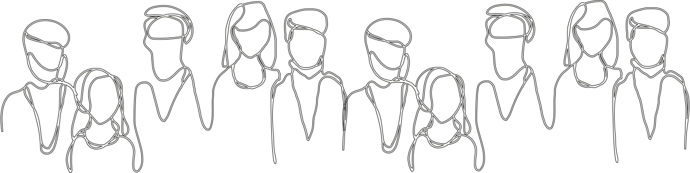

Lær os at kende
Hos Team for Selvmordsforebyggelse brænder vi for at lytte til og drage omsorg for selvmordstruede. Vi vil hjælpe dig med at finde en løsning i en tid, der virker særligt håbløs, og vi bestræber os altid på at hjælpe dig og dine pårørende godt på vej.
Om forløbet
Forløbet strækker sig over 10 samtaler i samarbejde med en læge, sygeplejerske, socialrådgiver, psykiater og i perioder en psykolog. Disse samtaler varer typisk 45 minutter til en time og kan være individuelle eller inddrage pårørende – alt efter dit ønske. Og er der behov for det, forlænges forløbet. Hvert menneske er unikt og har deres egen historie bag selvmordstankerne. Derfor tilpasses det, der snakkes om, altid dig. Vi kan ikke fjerne dine selvmordstanker, men vi kan give dig midler og værktøjer til at håndtere dem.
Kan du bruge forløbet?
Forløbet er for alle over 20 år i Region Syddanmark, der har forsøgt eller været tæt på at forsøge selvmord. Har du en alvorlig psykisk lidelse, et misbrug eller en svær spiseforstyrrelse, er du dog bedre hjulpet i en af Psykiatriens andre afdelinger.
Er du i tvivl, om forløbet er for dig? Vores sekretær sidder klar til at hjælpe dig på 99 44 89 60.
Hvad siger andre om forløbet?
Jeg har aldrig været god til at snakke om tingene, men forløbet fik mig til at føle mig tryg, når jeg snakkede om mine selvmordstanker.
Sille, 19
Esbjerg
Snak med os
Du er altid velkommen til selv at kontakte os – selv uden henvisning fra egen læge.
Vi sidder klar til at hjælpe dig på tlf. 99 44 89 60
Mandag - torsdag kl. 08-16
Fredag kl. 08-13
Eller mød os hos Team for Selvmordsforebyggelse
Lokalpsykiatrien Odense
Toldbodhusevej 4
5000 Odense C
Har du brug for hjælp uden for teamets åbningstid? Disse folk står altid klar til at hjælpe dig.
Vagtlægen
70 11 07 07
Psykiatrisk akutmodtagelse
99 44 91 40
Livslinien
70 210 210
livslinien.dk
Se mere på regionsyddanmark.dk eller kontakt de andre teams for selvmordsforebyggelse i Region Syddanmark:
Aabenraa
99 44 61 00
Team for Selvmordsforebyggelse – voksne
Opnørplads 1-3, 3. sal
6200 Aabenraa
Esbjerg
99 44 70 30
Team for Selvmordsforebyggelse – voksne
Østergade 12
6700 Esbjerg
Fredericia/Kolding
99 44 80 10
Team for Selvmordsforebyggelse – voksne
Vendersgade 49, 1. sal
7000 Fredericia